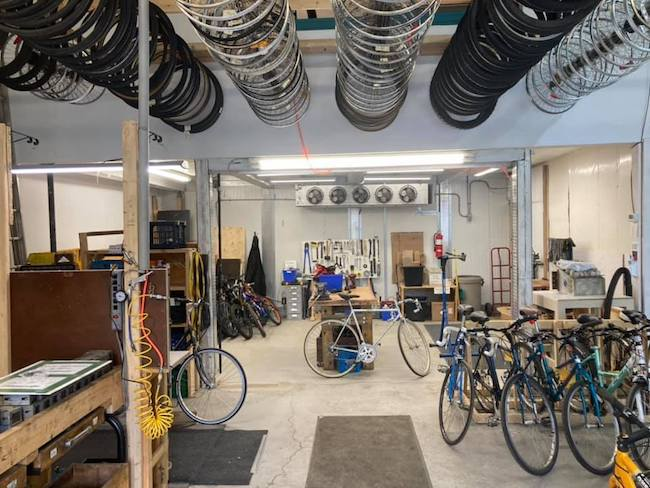

A hands-on workshop
re-Cycles has a long tradition of providing shared tools, work space and guidance from volunteer mechanics.
A place to learn, tinker and keep your bicycle on the road.

re-Cycles has a long tradition of providing shared tools, work space and guidance from volunteer mechanics.
Wear clothes that can get dirty, follow workshop safety guidance, and ask before using unfamiliar tools.
The archived site lists an hourly DIY shop fee and volunteer-work exchange, but these are historical details, not confirmed current offers.
To confirm: The original site contains older information. The organization should verify current policies, fees and services before this prototype goes live.
For current hours, pricing and availability, please check with the shop before visiting.
Plan your visit ↗